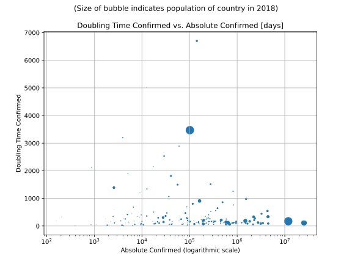

Most Recent Figures: Lowest Doubling Time Rate by Country
The doubling time mentioned below is calculated based on
- an exponential growth assumption
- for time difference of past seven (7) days
- showing the most recent reported value available
- for confirmed (not active!) cases.
The doubling time’s unit is “days”.

| Country |
Doubling Time (Confirmed) |
| Malaysia (MYS) |
90.7 days |